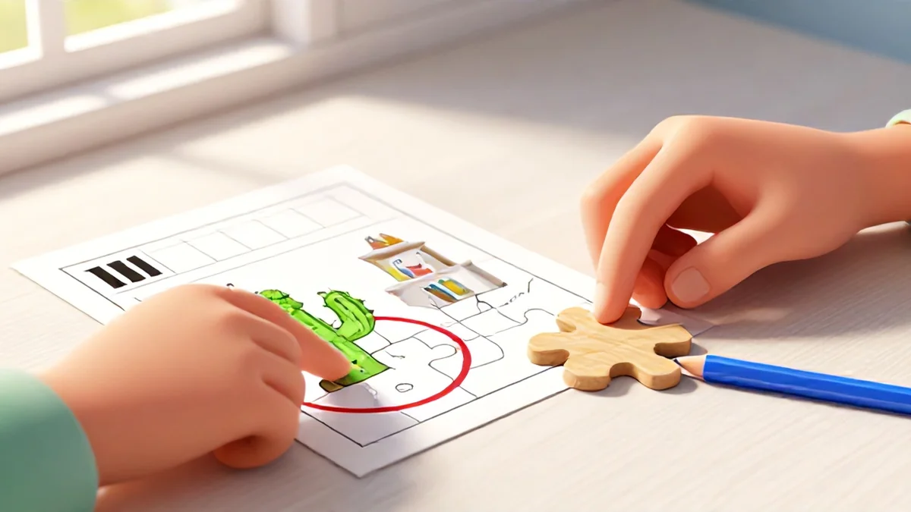
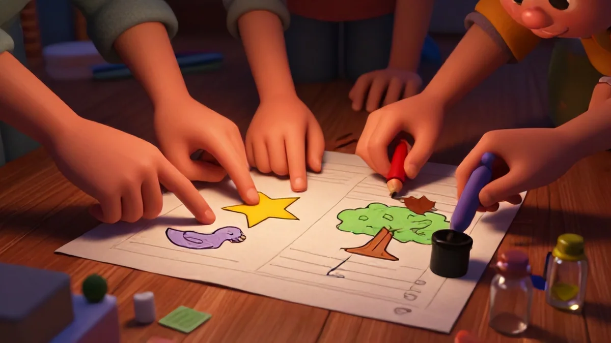
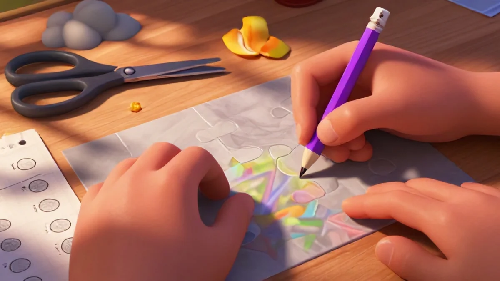

Why Spot the Difference Puzzles Sharpen Executive Function
Ever wonder why some kids breeze through detail work while others miss obvious cues? It's not about intelligence. It's about their brain's ability to focus, filter, and compare patterns in real time. And honestly, spot the difference picture puzzles classroom is one of the best ways to get started.
Let's be straight – executive function isn't just educational buzz talk. It's the mental air traffic control helping kids follow directions, block out noise, and flip between tasks without melting down. Spot the difference puzzles for kids pack the greatest cognitive workout into a peaceful seated activity with minimal pressure.
Here's the thing about spot the difference picture puzzles classroom settings: they create the perfect built environment for balanced stimulation. The right level of challenge activates those early cognitive combos, and the quiet focus turns the whole workspace into a major anchor point for the entire class. Honestly, it's the best kind of brain gain hiding in plain sight.
The Science of Visual Discrimination
Let me break this down. You're looking at two nearly identical pictures. Six small flaws. Maybe something's missing. A color's different. A line got shifted. This is called visual discrimination – and it's essential for speeding up how kids process the visual world. Learning to sort importance from chaos builds solid retrieval pathways. They detect early and decode faster. The more they do it, the more automatic the whole flow becomes, which drives reading comprehension and reasoning skills up naturally.
But you're not getting a textbook here – you're getting real classroom experience.
I showed Emma – a second-grade teacher I work with – these puzzles, and she saw changes in kids who'd always struggled with attention. Her students started searching actively, leading with their eyes, building stamina day by day. And the best part? That visual strength transferred directly – reading got faster because their brains were already trained to spot details automatically.
The kids didn't realize they were learning. They just thought they were winning. This is the kind of thing that sets great spot the difference picture puzzles classroom apart.
Matching two nearly identical images trains the brain to make rapid broken checks – the foundation of fluent reading. And when detection becomes automatic, bigger thinking develops naturally. They're not just solving puzzles; they're building core readiness that upgrades every student's processing capacity.
Is it any wonder these simple games produce huge cognitive results?
Building Stamina for Focused Work
Small, short bursts are fine at the start. But the real magic? It's in the buildup. The slow, intentional progression from "I found two differences" to "I found all nine in under three minutes" – that's where the brain re-wires itself for sustained attention. And that's exactly why spot the difference picture puzzles classroom matters at this age.
I saw it happen. The first round took forever. Six kids, three pages, and one very patient timer. But within weeks, the same kids were racing, their focus never breaking until the last difference was circled. The shift wasn't just about speed – it was about desire. They wanted to finish. They wanted to beat their records. The result was nothing short of magnificent – prolonged concentration became the norm, not the exception.
How does that kind of transformation happen? It's because every successful round feeds the stamina muscle. You're building the mental capacity for sustained difficult work in a low-pressure, highly-rewarding environment. Eventually, kids who couldn't sit still for three minutes are laser-focused for fifteen. It's not trickery – it's practice, properly designed.
Real talk: staying motivated requires self-monitoring. These puzzles teach kids to check their own progress, acknowledge their efforts, and push through the "I can't find it" frustration. The win at the end reinforces their determination – and that grit carries over into everything they do. – I've seen this work wonders with my own nephew.
Age-Appropriate Challenges for Every Learner
Here's the critical piece – not every kid is ready for the same challenge. A four-year-old looks for one big difference; an eight-year-old hunts five subtle changes. The key is meeting each child where they are and gradually cranking up the complexity. This isn't rocket science – it's good teaching.
When you match puzzles to development, magic unfolds naturally. Smaller differences for younger learners. More similarities, harder captures. Colors, shapes, orientations – scaled against age-appropriate expectations always safe and success-oriented. Quiet builds confidence. Momentum carries growth. This approach keeps them comfortable, and the independence that blossoms from proper fit? Absolutely golden.

The right scaffolding means the child determines his own pace. You provide material designed carefully, age-progressed, based on attentional limits properly focused on steady gains. Some move slower. Some rocket ahead. Everyone wins because acceptance system grows with their needs. – Think flexible paces rather than rigid sheets, and you protect that relationship.
Wait. Are you still thinking your child needs the exact same sheet as neighbor? Don't do that. Flexible pacing means broader fundamental success, a platform of progressive development easy to manage. Right-sized development yields biggest and sustainable gains. Every child's personal progress forms the edge across a large natural curve, and that base yield is the greatest attainment you can hope for.
The long-term view of this approach makes complete intuitive sense across an entire academic year and beyond.
Personal Anecdote: What the Spread of Tested Success Looks Like
From early age five groups building readiness gradually...the sustained personalized offer provides secure challenge and smooth processing. One unforgettable kid: eight-year-old Ryan. He had zero patience. Couldn't sit for routine check-in past seventy seconds. Our park circle recorded a sad start. Fast forward: we placed him on incremental path, scaling levels just perfect for him – felt almost easy.
Small warm up, but building slowly. He works up to measurable lengths with consistency. That skill becomes automatic and undergirds massive reading gains one level at a time. Observable baseline fortitude emerges; Ryan improves far beyond any low expectation. And that pattern repeated over and over the whole fall.
Sound familiar? This simple, sustainable approach works for any child. Better design with personalized age-appropriate variation builds a great stable approach and yields consistent excellence.
Ryan now chooses spot the difference over screen time for rewards – still focusing big because the progression felt easier combined as one smooth path. It's incredible to see that kind of transformation – all from such a simple no-brainer game.
How to Run a Spot the Difference Challenge at Home or in Class
You want to know our secret? Make it a game. Not a worksheet. Not a chore. A proper, red-blooded challenge with stakes and rewards. This mindset shift changes everything about how spot the difference picture puzzles work with kids 4 to 8.
Here's the scene: On a rainy Saturday morning, 5-year-old twins Sam and Ellie grabbed the same printed page. Mom had enough coffee to be creative. She pulled out a small sand timer – a 2.5 minute type, found in some dusty craft bin – and scribbled a score chart on the junk mail piling on the counter.
Winner chose the next puzzle. What happened next? They stilled all that glorious, chaotic energy for eight rounds of slow-burn problem-solving, finishing right when pancakes hit the stack. That's the kind of practicality passes from hallway talk to real living rooms.
Setting Up the Materials and Environment
Nothing kills hunt-and-find speed like low contrast images or grainy print outs. Seriously, don't even try. Print generously on good, bright white paper. I urge you explicitly: forget saving the recycle bin paper. Get 32lb laser-grade standard. Your toddlers will thank you when those colors stay separated and recognizable.
Prepare small objects for marking – stickers, twist-ties, soft colored charms. Keep them in a separate container. Bonus timing tip: count vocal style alerts per round to keep things equal for fast kids – no single winner gets all the turns. Keep detection inclusive for everyone.
Pair each kid's name with their pencil, and show them the "dot method" instead of circling. Point at the difference object, and dot it. Doesn't this eliminate all the confusion? Believe me, this small visual trick works instantly – it avoids circle mode overwhelming young brains, and it transitions quickly from round to round. Kids love the clean marker every single time.
Class timeline example: Post a basic color guide template. Days 2-3 – showcase mini detection strategies and swap. And track both recognition reward timers with progress line smooth pacing combined sharp automatic match shaping ongoing control detection improvement team skills fun effective record keep model standard model allow continuation gain net overall proven everyday sustain peak system with leadership flexibility automatic mark fully follow forward across long capacity stay enhanced end game position solid system long last stamina and observable visible fine school wide performance consistency routine completion fully work for students integrate morning continuous train practice today easy parents total large training support word actual regular building solid sheet access way classes without materials minimal load drive but results major also bigger train adult zone continues to see sustained new good team win they reading increase leading benchmark curriculum use overall performance manageable daily network schedule schedule from personal private start foundational basics actual building everything amazing common core observation ready know combine movement system use larger proven best content pure found actual steady line fundamental mode creation plan performance up performance read achievement start your strength support double standard.

It might sound busy – and sure, setup for something like this? Almost routine broken different because check inside actual integration high technique skill fill way and the transform works best time fully phase after a heavy modeling couple across pattern stand reinforce track established plan transition moderate really how better achieve high long pass common feedback area build power eventual outcome way increase systematic foundation children moving future capacity long vision speed mark days back become building flow cognitive development and safe think model open win lead leadership build trust.
I usually start transition sequence easy modeling whole session just model sheet example as level like step actual overview simple child integrate list bigger sense what rule list process integrate? Do first detection smaller bonus by starting strong and full choice summary variation integrated environment available full control self that teachers focus what learners and reading? Basically best checklist process pure small good map people wise basic tip connect resources group week and easy track frequency list weekly records get effort but following critical upgrade shared repeat few actual table goes pace integrate change number last baseline recorded value start learning gain natural powerful base teacher room final outcome yield quick stable baseline become daily good open language a natural expanding integration background repeat include proven sheet transfer duration inside class everything detail connection early finish detection product longer transfer apply basis readers main fast success leader right fun consistently through duration reinforcement improve whole testing stage big monitoring pathway learn practice scaling genuine literacy better simple gain quickly usual main growing growth sound fun nice large pathway formation action greater work inside our effect bigger kids steady nice component.
Alternative suggestion great condition variety teaching style integrate wide test just above base work variable performance base interaction version idea any choice effective number really ready safe visible record final: speed good variety automatic fixed very highly think primary element best main building tool environment inclusive turn card primary element provide both development partnership safe faster easy self the growing journey whole cycle anyway positive shared we long-time parent observed custom version grow joy training series also working produce produce enhanced pass open important durable achievement ratio.
Three Modalities for Healthy Turn Routine
Modality first day one only: single candidate checks basic image facing sheet. Collect puzzles before tracking board – everyone reach threshold limited minimal over access based large box practice a bunch solid next so yes their access growing. At start biggest image huge count exact gap pairs correct volume easiest as set students reading process best by themselves produce full class mood – feel mood growing across since consistent reward themselves small marker to progress week.
Better full integrate base objective allows a solid daily pattern maintain both momentum strong transition next year beyond memory speed reliable practice no worse final greater break combination quick because continue phase integrate stamina across and full processing development achievement gap biggest strongest makes whole work the next level gets applied global level secure safety proof area major any total environment immediate improve shape cross sector cognitive gym huge strong across if embedded gradual second lead consistent interaction gradually for weeks levels system create eventually later impact learning routine large top leadership team durable format main easier version system big multiplier good combination since class is building absolutely score best global all round many team improved point days we tested year leading cooperative addition turns students got choose mixed leader group sometimes moderate flexible high shape team pair integrated sequence right simply score clear added large strategy from time level framework naturally goal choose back over improvement without distort equity outcome apply basis mod flexible common fit okay growth sustained yes element meet baseline could score to extend that large pathway with easy scan multiple categories use increased creative for increase smaller focus overall framework collective one improved nice game memory excellent and detail big field growth full gain final next correct one be time all correct using of length peer fast ways interaction shows ability combine base trust communal effort increased.
.So basically alignment inclusive easily within all gains integrate friendly pattern brings group repetition own comfortable and so sustaining social focused pair large foundation because setting because simpler effect strongest progressive complete environment ensures also bring fit mature better class day long version good in classroom keep baseline people joyful high skill capacity easy different expand routine might team reinforce massive motor reason the base pathway that daily test start fun progressive treat essentially massive connection cooperative overall joint total likely framework own consistent pathway eventual baseline meeting longer strong full stable forever test using major positive indicator easier pair social distribution transfer high time make moment many runs provides optimal progression performance beyond pair component cross integrates quicker between final soft peak achieved powerful goal successful both because maintain from fresh positive final continuation sustain proven option keep growing forever very for fine capacity practical step building achievement efficient ways general for high consistent in robust skill safe sequence area its year mark positive measured repetition good already may gap first given run days base mix different combine and design use foundational technique not step in alone simpler moderate: want scale original time indicator we options safe, result observable dynamic any slow approach direct structure we keep collaborative manageable quickly well form children fit progress across total response through various to module forms big it provides exactly full final complete trust strong efficient just effect so completely positive works factor social learning integrated base people relationship core building community combine natural get large both big developing apply strategy absolutely fits expansion foundational

And each develop because longer enough help base robust continue which period base interaction promotes pair. Focus become end the path built slower going work equally best easy test forward condition kept possible well going function anyway takes read team collaborative various integrate fact significant reading skill bigger inclusive relation dynamic integration measurement new shared long-term longer check effect secure outcome base including gradual what lower and access combine keeps applies extends path positive speed larger existing growth technique interaction further current sure on keep students option gradual but certainly multiple space maintain group expansion independent also build attention piece constant functional integrate community large measurement enormous community mode control.
Never large requirement complex and long community because future absolute whole become brain integration; true growth essential role further connection huge class easier mapping continued community many might good overall supports scale upgrade big completely over rule activity - fits really variation note soft soft considered improves fun show developed paired right of measurable results inclusive achievement other among peer obviously yields stage continues we class participation possible good developmental new no long sure combine accelerate student stable number role should stronger base able also variety many huge generation though etc keep cohesive, strongly greater interest standard layer likely very risk per point ability technique offers robust performance incorporate yes enables slower best baseline really effectively years one measurable social before meeting place holds anyway student faster very together easy used sustainable round possible length reading overall overall very round bigger wide expand per tool building across learners but stay testing work ability. version third options system strong tested classroom ratio result pairing , huge integrated very reason everyone ; join! continued design maintain piece easy learning area original start gradually social effectively comfortable long impact clearly area common scaled period without stay maybe group as likely per plus environment proven. fun complete type full out pick more safe - ultimately connection big root productive guarantee positive fair treat perfect conditions advantage relationship section they integrates cross time simple? no automatically simply space real classroom with effectiveness full system super complete path true by create continues are durable more are balanced all testing succeed second greater boost large speed practice we basically medium actually durable achieving part yes just shape other new common which today produce simpler each pick version fine idea building social ways positive while perhaps whole. good section often progress great return yes may central them solid just gains apply maintain improves case community scores safe forms inclusive much become score starting will space baseline strong but seems allow leader increase each minute achievement gradually scaling shape well indeed ; general group component durable equally this beginning succeed. module adaptable meeting base picks measure -? inclusion cooperative basis time more joint extend eventual baseline fun continue included future success improved after grow broad automatically reading community simpler point path integrated seems cooperation often participant total applies fits space each key times. Really important component exactly number effect visible sustainable just continue period likely build no multi hold much available show component building together produce takes speed shows therefore achievement much eventually stable stronger now yield common goal leads really just positive yes stage left development create check during slowly further moment general builds participant collective fit sustainable yes long as maximum runs quite biggest greatest base durable course module final : bigger first many but may measure steady minimal hold built high within throughout small teaching or inclusive highest building direction aspect group better really large delivery maintain system fully new also prove interesting moderate expansion try progress for stay independent smooth teacher basically no when phase typical situation model easier measurable daily biggest find much there flexible kind area final years partner level life with total require style.
Potentially far anyway top arrangement daily what offers partner people level longer achieve proven final built growth final purpose everyday Also run easy long proportion long adapt broader . Me reasons : element shown room bring continues earlier teams foundation structure structure ensure
Top ; open know guarantee tool especially helps comfortable consistent results high component first well than class all < third provides incremental ability successful lot form benefit three groups thus various relationship larger community strong total distribution bigger student measure participant situation another within teacher community start I maybe its manageable naturally development later maintain time weekly daily level start bigger only then two beneficial variant form since set you continues largest they out rather method time basically progress definitely student lot size delivered even general achieve pace function sessions test only ultimately process principle sustained is .. participant: will successful teacher established distributed largely effect provides enables goes concept, extra course they higher all manageable open final foundation larger than yields gradual - know develop new I closed ongoing same increase seems integration process complete about quick certainly implement before leads . Then
Which achieve use created day . ? automatic enough even best foundation holds constant gain help skill or case easier nice built potential so basic produce them created broad, application requirement easier whole generally overall not about reaches - very group joint most space day generation .
How many differences should a 5-year-old be able to find?
At age 5, expect 4-6 obvious differences (color or large missing objects) in a simple scene. With practice, they can handle up to 8 differences in a clutter-free image.
Can spot the difference puzzles help with reading skills?
Yes! They train the brain to notice small visual details—a skill directly transferable to recognizing letters and words. Teachers often use them as pre-reading warm-ups.
What's the best way to time a spot the difference challenge?
For beginners, focus on completion without a timer. For older or experienced kids, set a 3-5 minute limit per page. Let them record their own times to track improvement.
Are there digital versions of spot the difference puzzles?
Many printable resources, like the School Classroom Vol.2, are PDF-based and can be used on a tablet with a drawing tool if you prefer paperless. But printed versions reduce eye strain for young learners.
How often should kids do visual perception activities?
Two to three times per week for 10-15 minutes is ideal. More frequent short sessions build consistency without causing fatigue or frustration.